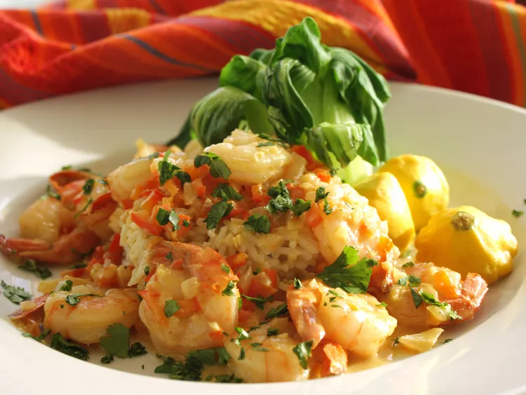

Coconut Shrimp Curry
HOME

Description
Coconut curry is a wonderful midday dish. not too heavy, and utterly
delicious!
It's easy to adjust the level of spice to suit your own taste, so feel
free to play around with this one a bit!
Ingredients
- 1 teaspoon canola oil
- 1/2 cup minced onion
- 1/2 cup minced red bell pepper
- 1 clove minced garlic
- 1 teaspoon ground cumin
- 3/4 teaspoon ground coriander
- 1/2 teaspoon curry powder(add more or less depending on taste)
- 1/2 cup light coconut milk (add more for a creamier sauce)
- 1 teaspoon sugar
- 1/4 teaspoon chrushed red pepper flakes
- 1 pound jumbo shrimp, peeled and deveined
- 1 tablespoon cornstarch
- 1 tablespoon water
- 2 tablespoons chopped fresh cilantro
Directions
-
Heat oil in large, nonstick saucepan over medium heat. Saute onion, red
pepper, and garlic until vegetables begin to soften, about 3 minutes.
-
Season with cumin, coriander, and curry powder. Cook for 1 more minute.
Stir in coconut milk, sugar, and crushed red pepper flakes. Bring to a
boil. Reduce heat, and simmer, uncovered, for 2 minutes.
-
Stir in shrimp, and increase heat to medium-high. cook and stir until
shrimp is cooked through, about 4 minutes.
-
Combine cornstarch with 1 tablespoon water in a small bowl; stir into
shrimp mixture and cook until sauce has thickened, about 1 minutes. Stir
in cilantro, and remove from heat.
- Serve, and enjoy!